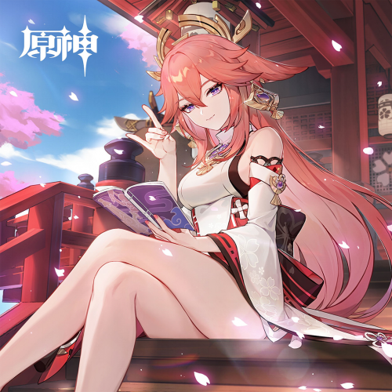
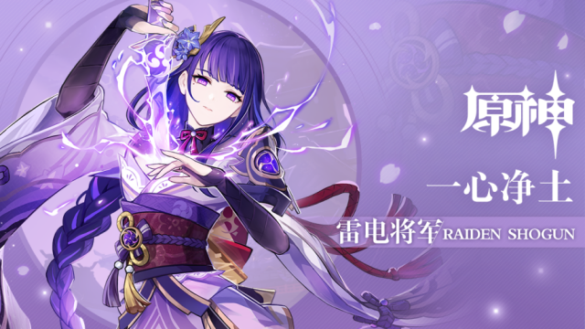

我最喜欢的三个游戏角色
我最喜欢的三个游戏角色
 芙宁娜
芙宁娜，米哈游出品的游戏《原神》及其衍生作品中的角色，魔神名芙卡洛斯，“尘世七执政”中的水神，众水、众方、众民与众律法的女王，曾经统治着水之国枫丹 ，深受民众喜爱 。
曾以水神之姿高居歌剧院，俯瞰众生相的芙宁娜，如今已经走下舞台，步入尘世。虽已不再“饰演神明”，但枫丹廷中仍有许多人奉她为偶像，而她热爱喧嚣的性格也一时难移。丰沛的情感，热闹的故事，仍如往常一样开演。只是从今往后，芙宁娜终于不必自高处遥望。尽管作为“神明”的一生已经谢幕，但她作为“人”的一生，或许才刚刚开始。
芙宁娜
芙宁娜，米哈游出品的游戏《原神》及其衍生作品中的角色，魔神名芙卡洛斯，“尘世七执政”中的水神，众水、众方、众民与众律法的女王，曾经统治着水之国枫丹 ，深受民众喜爱 。
曾以水神之姿高居歌剧院，俯瞰众生相的芙宁娜，如今已经走下舞台，步入尘世。虽已不再“饰演神明”，但枫丹廷中仍有许多人奉她为偶像，而她热爱喧嚣的性格也一时难移。丰沛的情感，热闹的故事，仍如往常一样开演。只是从今往后，芙宁娜终于不必自高处遥望。尽管作为“神明”的一生已经谢幕，但她作为“人”的一生，或许才刚刚开始。

八重神子
八重神子，米哈游出品的游戏《原神》及其衍生作品中的角色，掌管鸣神大社的大巫女、狐之血脉的延续者、“永恒”的眷属与友人，以及，轻小说出版社“八重堂”的恐怖总编。有着多重身份的神秘宫司，凡人或许永远无法了解她的真面目与真心 。

雷电将军
雷电将军，游戏《原神》中的5星雷系角色。此世最殊胜威怖的雷霆化身，稻妻幕府的最高主宰。挟威权之鸣雷，逐永恒之孤道的寂灭者。